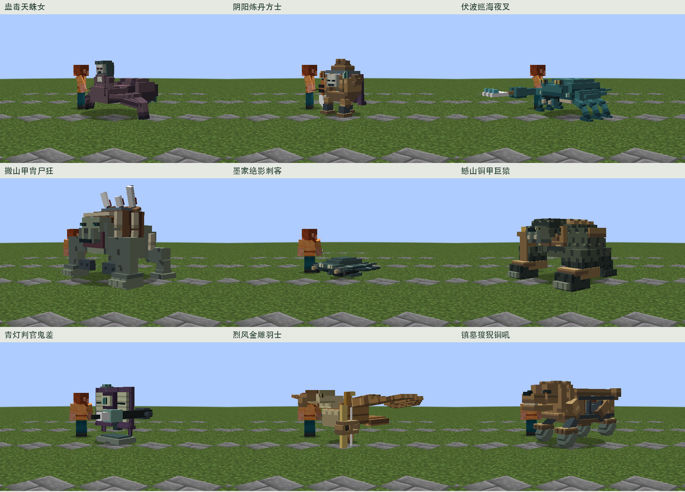
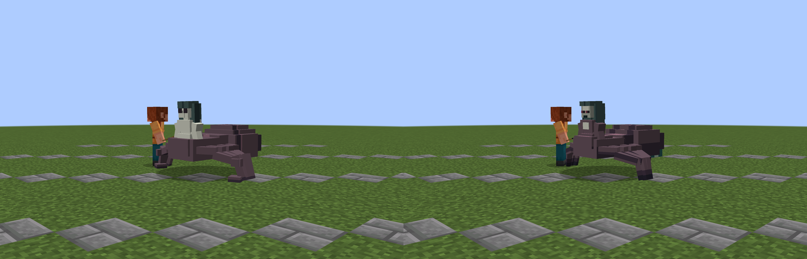
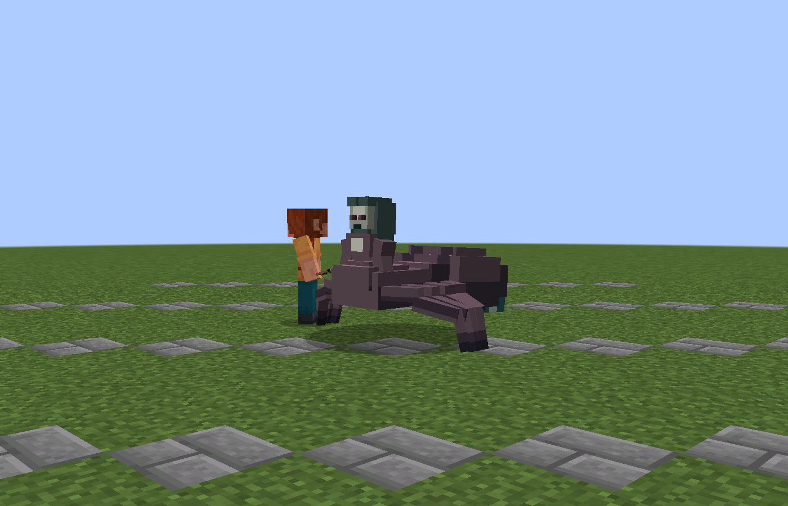
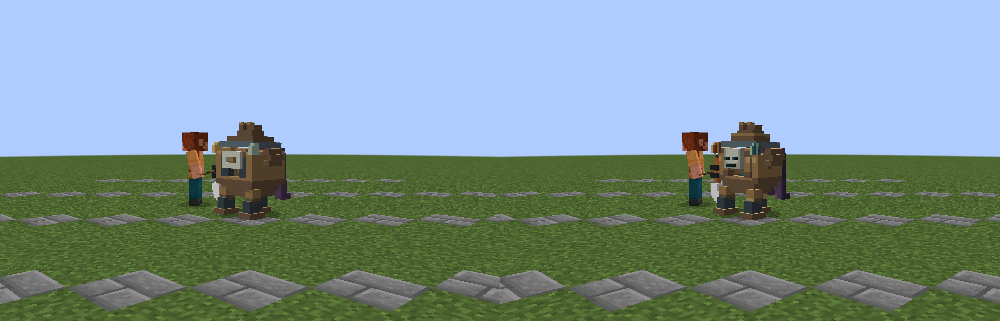
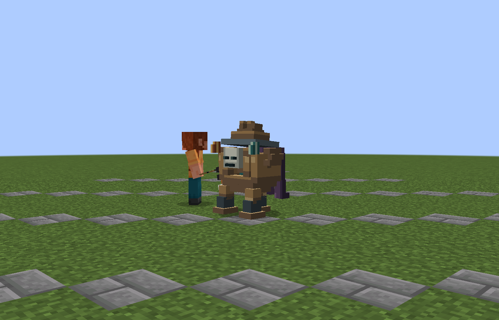
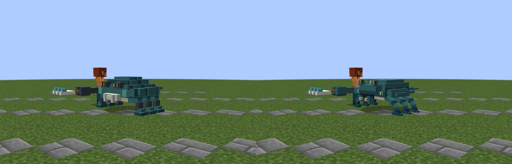
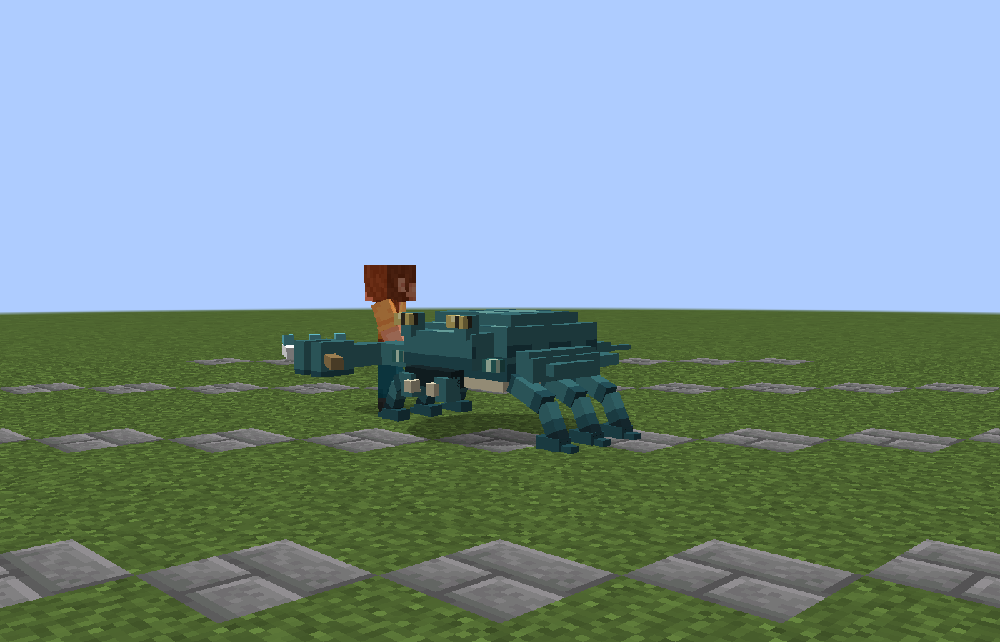
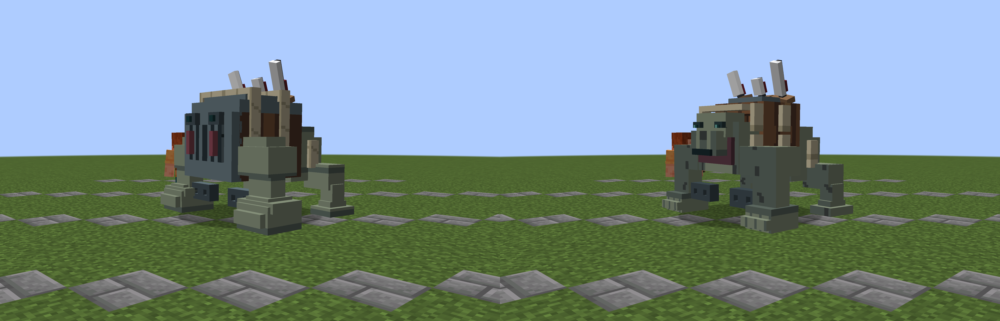
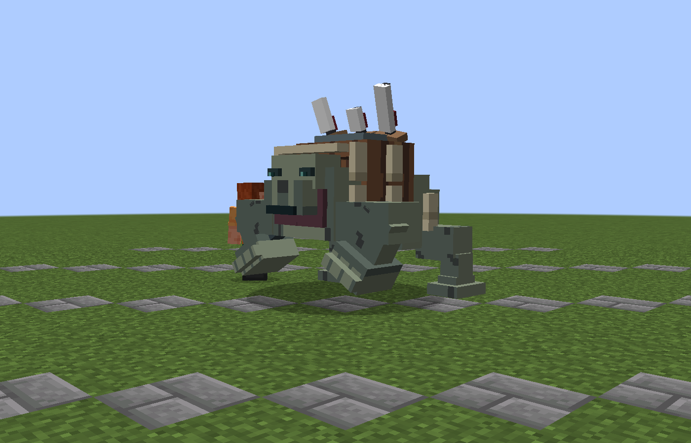
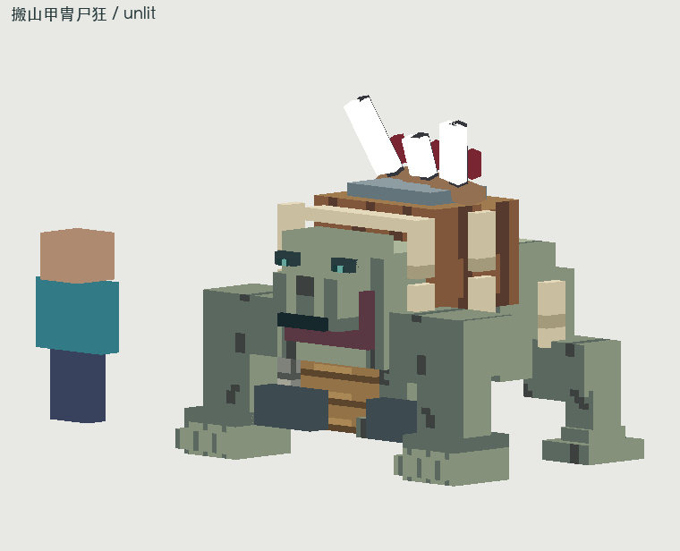

实际游戏总览：全部相同裁切、相同比例；每只完整原图和对比在下方。蛊毒天蛛女
dynasty:gudu_tianzhunv去掉大白色人形胸块；胸腹连成蛛壳，腿端收尖，腹纹顺腹背排列。保留原有仪式面具身份。
实际借鉴：暮色甲虫、Alex多足虫的前后分区。不使用参考网格或像素。

左：修改前 右：修改后 / 实际Forge渲染截图，同条件完整技能实机序列 / 0–144 tick

现有同步技能；AI关闭的固定场景，不冒充自然战斗。截图逐4 tick采样，WebP半尺寸最近邻。
原色、灰度、剪影、PNG和完整软件动作
阴阳炼丹方士
dynasty:yinyang_liandan_fangshi保持真实空炉腔，简化炉肩与盖，面具用眼窝和下颌分区，铜与内铁、瓷面分开。
实际借鉴：暮色Death Tome的器物主体与薄附件关系。不使用参考网格或像素。

左：修改前 右：修改后 / 实际Forge渲染截图，同条件完整技能实机序列 / 0–144 tick

现有同步技能；AI关闭的固定场景，不冒充自然战斗。截图逐4 tick采样，WebP半尺寸最近邻。
原色、灰度、剪影、PNG和完整软件动作
伏波巡海夜叉
dynasty:fubo_xunhai_yecha后甲盾与低头部相接；六足改为斜向节肢，去平底靴，口器与眼柄独立。
实际借鉴：Alex龙虾/螳螂虾、暮色甲虫。不使用参考网格或像素。

左：修改前 右：修改后 / 实际Forge渲染截图，同条件完整技能实机序列 / 0–144 tick

现有同步技能；AI关闭的固定场景，不冒充自然战斗。截图逐4 tick采样，WebP半尺寸最近邻。
原色、灰度、剪影、PNG和完整软件动作
搬山甲胄尸狂
dynasty:banshan_jiazhou_shikuang棺移回背部既有上方体量；肩胸、头口露出，前拳减去底座感，棺木与尸身分清。
实际借鉴：Alex灰熊/猿类的前肢承重。不使用参考网格或像素。

左：修改前 右：修改后 / 实际Forge渲染截图，同条件完整技能实机序列 / 0–144 tick

现有同步技能；AI关闭的固定场景，不冒充自然战斗。截图逐4 tick采样，WebP半尺寸最近邻。
原色、灰度、剪影、PNG和完整软件动作

unlit.png / 软件与源图gray.png / 软件与源图silhouette.png / 软件与源图texture-2x.png / 软件与源图spin.webp / 软件与源图idle.webp / 软件与源图hurt.webp / 软件与源图death.webp / 软件与源图walk.webp / 软件与源图墨家绝影刺客
dynasty:mojia_jueying_cike墨翼连成薄膜，躯体压低，去竹橇色底座，前缘成对眼斑与尾鳍有方向；匕首挂架保留。
实际借鉴：Alex鳐形/扁体生物与Cobblemon薄翼结构。不使用参考网格或像素。
左：修改前 右：修改后 / 实际Forge渲染截图，同条件native-front.png / 实机固定场景native-45.png / 实机固定场景native-side.png / 实机固定场景native-back.png / 实机固定场景native-contact.png / 实机固定场景 完整技能实机序列 / 0–144 tick
现有同步技能；AI关闭的固定场景，不冒充自然战斗。截图逐4 tick采样，WebP半尺寸最近邻。
原色、灰度、剪影、PNG和完整软件动作
unlit.png / 软件与源图gray.png / 软件与源图silhouette.png / 软件与源图texture-2x.png / 软件与源图idle.webp / 软件与源图hurt.webp / 软件与源图death.webp / 软件与源图walk.webp / 软件与源图stealth.webp / 软件与源图 撼山铜甲巨猿
dynasty:hanshan_tongjia_juyuan毛皮成为身体主体，铜仅保留护片；重画眉、鼻口、顺向毛簇，收后脚。检查并修正眼块被口鼻埋住的问题。
实际借鉴：Alex Gorilla实际灰模与原始PNG。不使用参考网格或像素。
左：修改前 右：修改后 / 实际Forge渲染截图，同条件native-front.png / 实机固定场景native-45.png / 实机固定场景native-side.png / 实机固定场景native-back.png / 实机固定场景native-contact.png / 实机固定场景 完整技能实机序列 / 0–144 tick
现有同步技能；AI关闭的固定场景，不冒充自然战斗。截图逐4 tick采样，WebP半尺寸最近邻。
原色、灰度、剪影、PNG和完整软件动作
unlit.png / 软件与源图gray.png / 软件与源图silhouette.png / 软件与源图texture-2x.png / 软件与源图smash.webp / 软件与源图idle.webp / 软件与源图hurt.webp / 软件与源图death.webp / 软件与源图walk.webp / 软件与源图 青灯判官鬼差
dynasty:qingdeng_panguan_guichai厚铁柜改为薄书封与页层，独眼为主；墨盂缩小，紫封、纸页、青灯各有明度。
实际借鉴：暮色Death Tome的薄书页与活化书识别。不使用参考网格或像素。
左：修改前 右：修改后 / 实际Forge渲染截图，同条件native-front.png / 实机固定场景native-45.png / 实机固定场景native-side.png / 实机固定场景native-back.png / 实机固定场景native-contact.png / 实机固定场景 完整技能实机序列 / 0–144 tick
现有同步技能；AI关闭的固定场景，不冒充自然战斗。截图逐4 tick采样，WebP半尺寸最近邻。
原色、灰度、剪影、PNG和完整软件动作
unlit.png / 软件与源图gray.png / 软件与源图silhouette.png / 软件与源图texture-2x.png / 软件与源图idle.webp / 软件与源图name.webp / 软件与源图hurt.webp / 软件与源图death.webp / 软件与源图walk.webp / 软件与源图 烈风金雕羽士
dynasty:liefeng_jindiao_yushi胸、背、颈连贯，减少重复翅条；淡颈深背、羽片分组，钩喙与眼清晰，爪持弓不动。
实际借鉴：Alex Bald Eagle实际原始PNG、暮色Raven体块。不使用参考网格或像素。
左：修改前 右：修改后 / 实际Forge渲染截图，同条件native-front.png / 实机固定场景native-45.png / 实机固定场景native-side.png / 实机固定场景native-back.png / 实机固定场景native-contact.png / 实机固定场景 完整技能实机序列 / 0–144 tick
现有同步技能；AI关闭的固定场景，不冒充自然战斗。截图逐4 tick采样，WebP半尺寸最近邻。
原色、灰度、剪影、PNG和完整软件动作
unlit.png / 软件与源图gray.png / 软件与源图silhouette.png / 软件与源图texture-2x.png / 软件与源图idle.webp / 软件与源图hurt.webp / 软件与源图death.webp / 软件与源图fly.webp / 软件与源图rain.webp / 软件与源图 镇墓狻猊铜吼
dynasty:zhenmu_suanni_tonghou方框鬃简化成阶梯鬃块，鼻口与眼窝形成兽脸；中空铸铜炉腹及原有球足保持。
实际借鉴：Alex猫科口鼻、Cobblemon狮形鬃部的大形组织。不使用参考网格或像素。
左：修改前 右：修改后 / 实际Forge渲染截图，同条件native-front.png / 实机固定场景native-45.png / 实机固定场景native-side.png / 实机固定场景native-back.png / 实机固定场景native-contact.png / 实机固定场景 完整技能实机序列 / 0–144 tick
现有同步技能；AI关闭的固定场景，不冒充自然战斗。截图逐4 tick采样，WebP半尺寸最近邻。
原色、灰度、剪影、PNG和完整软件动作
unlit.png / 软件与源图gray.png / 软件与源图silhouette.png / 软件与源图texture-2x.png / 软件与源图idle.webp / 软件与源图hurt.webp / 软件与源图death.webp / 软件与源图walk.webp / 软件与源图fire.webp / 软件与源图